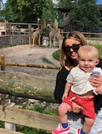
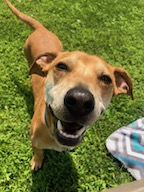

Just a few weeks ago, October 30th, Luka turned a year old. It still hasn't set in that an entire year has already passed. I am experiencing a paradox of time. It both feels like time is passing by far too quickly, and as if the last year has been an eternity; I cannot vividly recall a life without Luka. He is truly an angel baby (only partially biased), as he is the happiest, well tempered, most personality filled, curious, spunky baby I've known. He is also the biggest baby, already passing half my height at 33in tall. No, I am not the tallest at 5'4", but his Dad is 6'8", so I will probably be on my tippy toes come our first day of kindergarden photo.

During the Winter months, Luka and I always find ourselves at the Cross Center for the UMaine men's basketball games to cheer on his Dad. We always sit next to the bench on account of how precious Luka's excitement is when he sees Miks and waves with so much animation. Sometimes though, we find ourselves going for walks around the court's perimeter to stop thinking about how badly we want to run onto the court and be apart of the game. I think for Luka, the best part is at the game's end when his Dad finally picks him up to play.
We love attending toddler time on Mondays at the Old Town Public Library to read books, meet new friends, and see familiar faces. The Children's Museum is another fun outing we are always looking forward to doing. Each visit is a new adventure, and it's so extraordinary to watch Luka learning as he explores. He is also the best pal for shopping, as he never complains or tells me no when I'd like to aimlessly walk the aisles of TJ Maxx, or Target. It may be because unlike me, he never leaves empty handed. There is always a new book, puzzle or some other treat to be found. Sometimes though, he does look out for a new toy for his brother, who I cannot fail to mention. Wrigley, Luka's best friend, is a 1.5 year old Lab/Dachshund mix, and really is our other child. Originally, Miks and I were only supposed to foster him for a short time, helping out the animal rescue we volunteer for. That being said, Wrigley earned us the name "foster failures." But, he is the perfect fit for our little (well, maybe gigantic) family.
